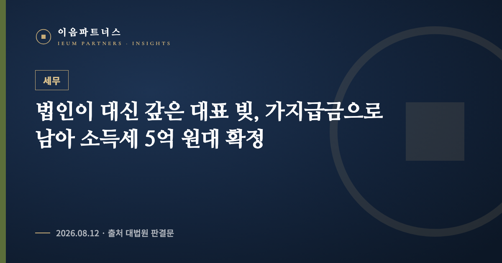

법인이 대신 갚은 대표 빚, 가지급금으로 남아 소득세 5억 원대 확정

한 의료법인 대표는 법인에 땅을 증여하면서 그 땅에 걸린 근저당 빚은 자신이 갚기로 약정했지만, 실제로는 법인이 2012년 약 24억 4,400만 원을 갚았습니다. 세무서는 이를 대표에게 내준 가지급금(회사가 대표 등에게 업무와 관계없이 내준 돈)으로 보고 회수되지 않은 잔액 등을 대표 상여로 처분했으며, 대법원은 2026년 8월 12일 2016년 귀속분 약 5억 2,936만 원을 포함한 종합소득세 부과가 적법하다고 확정했습니다(대법원 판결문). 대표님 회사도 대표님 개인 빚이나 비용을 대신 낸 적이 있지 않으신가요? 이 글에서는 판결문에 나온 사실관계와 판단, 미리 확인할 것을 정리합니다.
이 사건에서는 법인이 파산하고 대표도 회생절차를 거쳤지만 과세는 그대로 유지됐습니다. 회사가 대신 낸 돈이 장부에 가지급금으로 남아 있는지부터 확인해 보시길 권합니다. 정리 순서가 궁금하시다면 카카오톡 채널 이음파트너스로 편하게 물어 주세요.
무슨 일이 있었나
판결문에 따르면 대표는 2010년과 2012년에 법인에 땅을 출연·증여하면서, 땅에 설정된 대표 명의 근저당권의 채무와 이자는 자신이 부담하기로 했습니다. 그런데 법인이 2012년 이 근저당 채무를 갚았고, 같은 해 다른 회사에 7억 2,000만 원을 주고 선급금으로 처리한 돈도 세무조사에서 실질은 대표에게 내준 돈으로 확인됐습니다. 원심은 이렇게 생긴 가지급금 채권을 모두 31억 6,400만 원 상당으로 봤습니다.
| 구분 | 내용 |
|---|---|
| 법인이 대신 갚은 근저당 채무 | 약 24억 4,400만 원(2012년) |
| 선급금으로 처리한 돈 | 7억 2,000만 원(실질은 대표에게 내준 돈) |
| 대표 상여 처분 | 미회수 잔액 약 12억 8,587만 원, 인정이자 약 8,872만 원 |
| 종합소득세(가산세 포함) | 2015년 귀속 2,900만 200원, 2016년 귀속 5억 2,936만 3,420원 |
| 판결 | 대법원 2026년 8월 12일 선고, 대표의 상고 기각(확정) |
인정이자는 가지급금에 대해 세법상 회사가 받았어야 할 것으로 보는 이자입니다. 세무서는 미회수 잔액과 인정이자를 법인의 익금(법인 수익으로 세금 계산에 넣는 금액)에 넣고 대표 상여로 처분했고, 이에 따라 대표에게 종합소득세가 부과됐습니다.
법인 파산, 대표 회생에도 왜 과세가 유지됐나
법인은 2015년 6월 회생절차에 들어갔다가 2016년 3월 25일 파산선고를 받았고, 대표도 2015년 7월 회생절차가 시작돼 2017년 9월 종결됐습니다. 대표는 회생절차 때문에 법인이 돈을 돌려받을 수 없었으니 회수하지 못한 정당한 사유가 있다고 주장했지만, 대법원은 받아들이지 않았습니다.
① 회생절차가 열려도 회수 노력은 따로 따진다
대법원은 특수관계인(대표처럼 회사와 특별한 관계에 있는 사람)에게 회생절차가 시작됐다는 것만으로 정당한 사유가 되지는 않는다고 봤습니다. 회생채권자로 참가해 돈을 돌려받을 길이 있으므로, 법인이 평소 채권을 관리했는지와 회생채권 신고를 했는지 등을 종합해 따져야 한다는 것입니다. 이 사건 법인은 가지급금 채권을 회생채권으로 신고하지 않았습니다.
② 면책돼도 채무 자체는 남는다
대표는 이 채권이 회생절차에서 신고되지 않아 책임을 면했다고도 주장했습니다. 대법원은 면책이 되더라도 “채무의 이행을 강제할 수 없음은 별론으로 그 채무 자체는 존속하는 것”이므로, 가지급금을 익금에 넣는 데에는 영향이 없다고 판단했습니다(대법원 판결문).
대표님이 지금 확인할 것
- 회사가 대표님 개인 빚이나 이자, 비용을 대신 낸 적이 있는지, 장부에 어떻게 처리돼 있는지
- 선급금·대여금처럼 다른 이름으로 잡혀 있지만 실제로는 대표님이 쓴 돈이 없는지
- 가지급금 잔액과 인정이자가 해마다 얼마나 쌓이고 있는지
- 가지급금을 언제, 어떻게 정리할지 세무사와 함께 계획을 세워 두었는지
참고한 자료
- 대법원 2026. 8. 12. 선고 2026두30419 판결(종합소득세부과처분취소) — 대법원 판결문 (2026.08.12)
우리 회사 가지급금이 얼마나 남아 있고 어떻게 정리할지 궁금하시다면 카카오톡 채널 이음파트너스로 편하게 물어 주세요.
※ 이 글은 일반적인 정보 제공을 위한 것으로, 개별 사안은 세무사·노무사 등 전문가와 함께 확인하시기 바랍니다.